Fight Flash Fraud (F3), Auto reset hardware

F3 is an amazing alternative to h2testw, that allows you to test a USB flash drive to find out if it has less capacity than it claims.
There is a LOT of fake USB flash drives on Ebay and other stores; When you use them, they appear to be storing all your data, but when you try to retrieve it, much of it is just lost.
f3probe is part of F3, it will test the USB flash drive for you and tell you if it is a fake and how much real memory does it have, but there is a catch: it requires you to physically disconnect and reconnect the drive manually, which slows down the whole process and becomes tedious if you need to probe more than one drive. Here is the solution: a piece of hardware that f3probe will use to automatically connect and reconnect you USB drive without your intervention.

Here is a video about how to use F3:
And Here you can see the auto reset hardware probing a flash drive:
You can find good documentation about F3 here in case you need to know how to use it in more depth.
Software
First you’ll need to use a modified version of F3 that you can find in this branch
Download it, compile it and install it with:
$ make
$ make experimental
# make install
Hardware
This is the list of materials you’ll need for the project:
- 1 Relay (small)
- 1 USB A female connector
- 1 USB B female connector
- 3 1K resistors
- 1 2N3904 transistor
- 1 1N4007 diode
- 1 3mm green LED
- 1 5mm yellow LED
- 1 9V battery
- 1 9V battery connector
- 2 electronic pins
- 2 female to female pin wires
- 1 Interrupter
- 1 perforated PCB
- 1 USB to serial/UART converter
- 1 USB cables
For the USB to serial/UART converter, be sure it has a DTR pin.
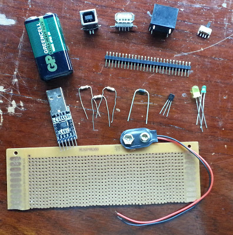
Build the hardware using the following schematic (here is a PDF of it):
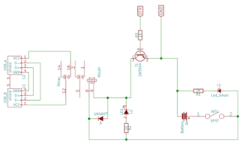
Its a good idea to glue the USB connectors to the board so they don’t move when connecting the cables.
Here is how it looks like when ready:
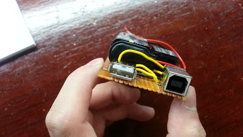 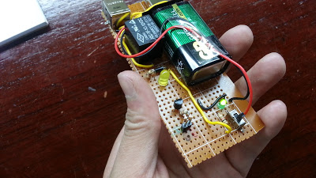 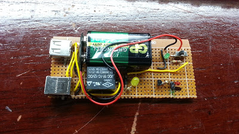
The reason I used a battery here is to make it easy to build without the need of a power supply. And yes, I know I could use a voltage booster to use the USB 5v supply, but then over current problems may appear and… Lets just keep the computer safe shall we?
Using
- Connect the GND and DTR pins of the board with the corresponding ones in the USB-Serial converter like this:
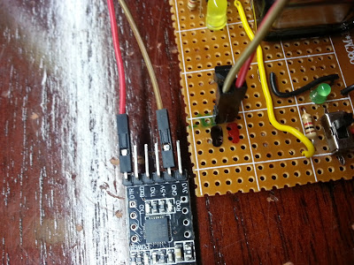
- Connect the USB-Serial converter to the computer using an appropriate cable (USB extension in my case).
- Connect the board to the computer using a A to B USB cable.
- Connect the target USB flash drive to the board.
- Turn on the board (the green LED should turn on).
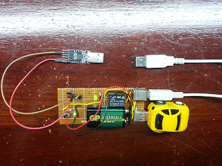
Then go to your computer and make sure you have the /dev/ttyUSB0, if your USB-Serial converter is on other file, make a symbolic link like this:
# ln -s /dev/ttyYOURDEVICE /dev/ttyUSB0
Now you can probe your USB flash drive using the reset-type option with a value of 2:
# f3probe --reset-type=2 /dev/TARGET
Replace TARGET with your device, just be sure it’s actually the USB flash drive before hit enter so you don’t mess up your hard drive.
Now the prober board will start blinking the yellow LED and you’ll see in your screen that f3probe reports device resets multiple times. When it’s done it will tell you if your flash drive is a fake or not.
F3 is an amazing alternative to h2testw, that allows you to test a USB flash drive to find out if it has less capacity than it claims.
There is a LOT of fake USB flash drives on Ebay and other stores; When you use them, they appear to be storing all your data, but when you try to retrieve it, much of it is just lost.
f3probe is part of F3, it will test the USB flash drive for you and tell you if it is a fake and how much real memory does it have, but there is a catch: it requires you to physically disconnect and reconnect the drive manually, which slows down the whole process and becomes tedious if you need to probe more than one drive. Here is the solution: a piece of hardware that f3probe will use to automatically connect and reconnect you USB drive without your intervention.
Here is a video about how to use F3:
And Here you can see the auto reset hardware probing a flash drive:
You can find good documentation about F3 here in case you need to know how to use it in more depth.
Software
First you’ll need to use a modified version of F3 that you can find in this branch
Download it, compile it and install it with:
$ make
$ make experimental
# make installHardware
This is the list of materials you’ll need for the project:
- 1 Relay (small)
- 1 USB A female connector
- 1 USB B female connector
- 3 1K resistors
- 1 2N3904 transistor
- 1 1N4007 diode
- 1 3mm green LED
- 1 5mm yellow LED
- 1 9V battery
- 1 9V battery connector
- 2 electronic pins
- 2 female to female pin wires
- 1 Interrupter
- 1 perforated PCB
- 1 USB to serial/UART converter
- 1 USB cables
For the USB to serial/UART converter, be sure it has a DTR pin.
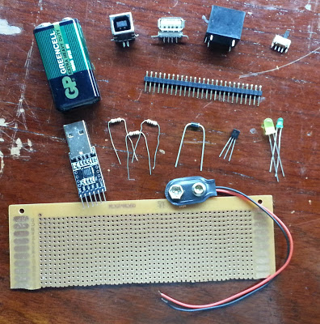
Build the hardware using the following schematic (here is a PDF of it):
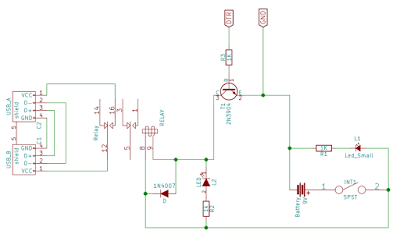
Its a good idea to glue the USB connectors to the board so they don’t move when connecting the cables.
Here is how it looks like when ready:
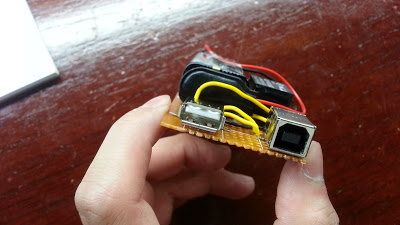 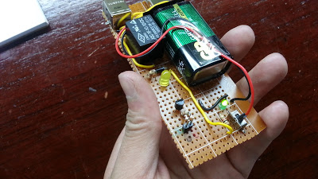 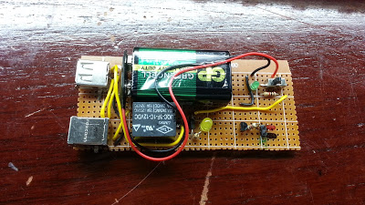
The reason I used a battery here is to make it easy to build without the need of a power supply. And yes, I know I could use a voltage booster to use the USB 5v supply, but then over current problems may appear and… Lets just keep the computer safe shall we?
Using
- Connect the GND and DTR pins of the board with the corresponding ones in the USB-Serial converter like this:
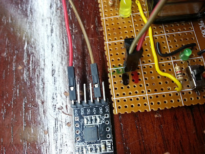
- Connect the USB-Serial converter to the computer using an appropriate cable (USB extension in my case).
- Connect the board to the computer using a A to B USB cable.
- Connect the target USB flash drive to the board.
- Turn on the board (the green LED should turn on).
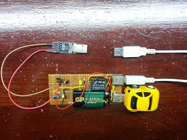
Then go to your computer and make sure you have the /dev/ttyUSB0, if your USB-Serial converter is on other file, make a symbolic link like this:
# ln -s /dev/ttyYOURDEVICE /dev/ttyUSB0Now you can probe your USB flash drive using the reset-type option with a value of 2:
# f3probe --reset-type=2 /dev/TARGETReplace TARGET with your device, just be sure it’s actually the USB flash drive before hit enter so you don’t mess up your hard drive.
Now the prober board will start blinking the yellow LED and you’ll see in your screen that f3probe reports device resets multiple times. When it’s done it will tell you if your flash drive is a fake or not.